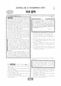

문제지

전국연합학력평가 · 시·도교육청 주관
2022년 3월 고3 학력평가 국어 언어와매체 1등급컷은 원점수 88점(추정), 표준점수 최고점은 144점입니다.
원점수 1등급컷은 공식 발표값이 아니라 EBSi·입시기관 값입니다. 등급별 값은 등급컷 표, 출처 구분은 데이터 원칙에 있습니다.

시험지를 먼저 풀어 보세요. 등급컷·표준점수·난이도는 흐리게 가려 뒀어요.
| 등급 | 원점수 | 표준점수 | 백분위 |
|---|---|---|---|
| 1 | 88 | 132 | 95 |
| 2 | 80 | 125 | 89 |
| 3 | 72 | 117 | 77 |
| 4 | 62 | 107 | 59 |
| 5 | 49 | 95 | 39 |
| 6 | 37 | 83 | 22 |
| 7 | 25 | 72 | 11 |
| 8 | 18 | 65 | 3 |
등급별 컷 · 입시기관 2곳 원점수 추정 종합(이투스·종로학원) · 공통+선택 점수 조합에 따라 다를 수 있음 · 만점 100점
| 등급 | 표준점수 이상 | 인원(명) | 비율 |
|---|---|---|---|
| 1 | 132 | 13,523 | 4.49% |
| 2 | 125 | 20,914 | 6.94% |
| 3 | 117 | 35,352 | 11.74% |
| 4 | 107 | 53,660 | 17.82% |
| 5 | 95 | 62,726 | 20.83% |
| 6 | 83 | 48,863 | 16.23% |
| 7 | 72 | 34,339 | 11.4% |
| 8 | 65 | 21,929 | 7.28% |
| 9 | 46 | 9,851 | 3.27% |
국어 영역 전체 응시자 기준이에요.
출처: 시·도교육청이 공개한 전국연합학력평가 성적 분석·통계자료(공개 자료 보기).
EBSi 응답자 기준으로 가장 많이 틀린 문항은 12번(3점)이고, 오답률은 74%입니다. 상위 15문항 중 1문항은 정답보다 한 오답을 고른 사람이 더 많았습니다(21번: 정답 ① 33.4%, ④ 38.1%). 오답률 50%를 넘은 문항은 6개입니다.
| 순위 | 문항 | 배점 | 오답률 | 정답 | 많이 고른 오답 |
|---|---|---|---|---|---|
| 1 | 12번 | 3점 | 74% | ① | ③ 24.2% |
| 2 | 21번 | 3점 | 66.6% | ① | ④ 38.1% |
| 3 | 11번 | 2점 | 65.2% | ③ | ④ 23.3% |
| 4 | 7번 | 2점 | 58.3% | ⑤ | ④ 21.4% |
| 5 | 6번 | 2점 | 55.6% | ③ | ④ 25.6% |
| 6 | 38번 | 2점 | 53.1% | ④ | ③ 24.2% |
| 7 | 8번 | 3점 | 48.8% | ① | ⑤ 14.7% |
| 8 | 36번 | 2점 | 47% | ① | ② 18.1% |
| 9 | 37번 | 3점 | 43.8% | ④ | ③ 18.5% |
| 10 | 17번 | 3점 | 43.6% | ③ | ② 17.9% |
| 11 | 15번 | 2점 | 41% | ② | ⑤ 12.2% |
| 12 | 24번 | 2점 | 40.4% | ④ | ② 28.6% |
| 13 | 27번 | 3점 | 38.2% | ⑤ | ④ 24% |
| 14 | 5번 | 2점 | 37.8% | ⑤ | ② 21.2% |
| 15 | 14번 | 2점 | 35.3% | ② | ④ 21.1% |
EBSi 가채점 응답자 기준 · 전 문항 중 오답률 상위 15문항
출처: EBSi 역대 등급컷·오답률 공개 화면. 가채점에 참여한 EBSi 이용자 응답이라 전체 응시자 정답률과는 다를 수 있습니다.
발행 기관: 시·도교육청(전국연합학력평가). 파일 위치: 이 사이트가 보관한 사본. 저작권은 발행 기관에 있습니다. 원본과 다르거나 게시 중단이 필요하면 연락처로 알려 주세요. 등급컷 출처 구분은 데이터 원칙에서 설명합니다.
막대 색은 역대 대비 난이도 · 진한 막대가 이 시험 · 막대를 누르면 그 회차로 이동
| 회차 | 1등급컷 | 표점 최고 | 1등급 표점 | 난이도 |
|---|---|---|---|---|
| 3월 학평2022년 고3이 시험 | 88 | 144 | 132 | 보통 |
| 10월 학평2021년 고3 | 91 | 138 | 130 | 쉬움 |
| 7월 학평2021년 고3 | 83 | 148 | 132 | 매우 어려움 |
| 4월 학평2021년 고3 | 89 | 139 | 130 | 어려움 |
| 3월 학평2021년 고3 | 76 | 142 | 131 | 매우 어려움 |
공통과목 독서는 능숙한 독자의 배경지식 활용을 다룬 독서론(1~3번), (가) 공공재의 성격과 공급을 둘러싼 견해, (나) 중앙 정부의 정액·정률 지원금이 지방 정부의 공공재 공급에 미치는 영향을 묶은 주제 통합형 사회 지문(4~9번), 검색어 자동 완성의 원리와 해시값 비교를 다룬 기술 지문(10~13번), 흄이 제시한 인과 관계의 요건을 다룬 인문 지문(14~17번)으로 구성되었습니다.
이 회차 국어에서 가장 많이 틀린 12번(3점, 74.0%)은 검색 조건을 모두 추가했을 때를 다룬 <보기> 문항이었고, 같은 지문의 11번(65.2%)도 어려웠습니다. 정액·정률 지원금 그래프를 이해하는 7번(58.3%), (가)의 두 입장에서 (나)를 이해하는 6번(55.6%)도 오답률이 50%를 넘었습니다.
문학은 작자 미상의 고전소설 「숙향전」(18~21번), 김춘택 「별사미인곡」과 박지원의 「백자증정부인박씨묘지명」을 묶은 갈래 복합(22~27번), 백석 「남신의주 유동 박시봉방」과 김수영 「그 방을 생각하며」를 묶은 현대시(28~30번), 김원우의 소설 「무기질 청년」(31~34번)으로 구성되었습니다.
환상담으로 이루어진 「숙향전」의 특징을 다룬 <보기>로 작품을 감상하는 21번(3점, 66.6%)이 문학에서 가장 많이 틀린 문항으로, 응답의 38.1%가 한 오답에 몰렸습니다.
언어와 매체에서 오답률 50%를 넘은 선택 문항은 38번(2점, 53.1%)으로, 명사를 파생하는 접미사 '-(으)ㅁ'과 명사형 어미를 다룬 문법 지문을 바탕으로 <보기>의 예문을 이해하는 문항이었습니다.
매체는 폐기물관리법 시행규칙을 다룬 텔레비전 프로그램(40~43번), 사진 동아리의 온라인 화상 회의와 발표 자료 초안(44~45번)을 다루었습니다.
기술 지문과 사회 지문에서 오답률 상위 문항이 몰린 회차입니다. 검색 알고리즘처럼 조건이 추가될 때 결과가 어떻게 달라지는지 묻는 문항은 지문의 처리 순서를 그대로 따라가며 <보기>의 조건을 하나씩 적용하는 연습이 효과적입니다.